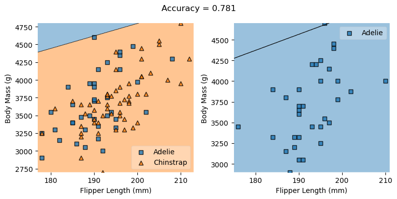

import pandas as pd
train_url = "https://raw.githubusercontent.com/middlebury-csci-0451/CSCI-0451/main/data/palmer-penguins/train.csv"
train = pd.read_csv(train_url)from sklearn.preprocessing import LabelEncoder
le = LabelEncoder()
le.fit(train["Species"])
def prepare_data(df):
df = df.drop(["studyName", "Sample Number", "Individual ID", "Date Egg", "Comments", "Region"], axis = 1)
df = df[df["Sex"] != "."]
df = df.dropna()
y = le.transform(df["Species"])
df = df.drop(["Species"], axis = 1)
df = pd.get_dummies(df)
return df, y
X_train, y_train = prepare_data(train)train.head(10)| studyName | Sample Number | Species | Region | Island | Stage | Individual ID | Clutch Completion | Date Egg | Culmen Length (mm) | Culmen Depth (mm) | Flipper Length (mm) | Body Mass (g) | Sex | Delta 15 N (o/oo) | Delta 13 C (o/oo) | Comments | |
|---|---|---|---|---|---|---|---|---|---|---|---|---|---|---|---|---|---|
| 0 | PAL0708 | 27 | Gentoo penguin (Pygoscelis papua) | Anvers | Biscoe | Adult, 1 Egg Stage | N46A1 | Yes | 11/29/07 | 44.5 | 14.3 | 216.0 | 4100.0 | NaN | 7.96621 | -25.69327 | NaN |
| 1 | PAL0708 | 22 | Gentoo penguin (Pygoscelis papua) | Anvers | Biscoe | Adult, 1 Egg Stage | N41A2 | Yes | 11/27/07 | 45.1 | 14.5 | 215.0 | 5000.0 | FEMALE | 7.63220 | -25.46569 | NaN |
| 2 | PAL0910 | 124 | Adelie Penguin (Pygoscelis adeliae) | Anvers | Torgersen | Adult, 1 Egg Stage | N67A2 | Yes | 11/16/09 | 41.4 | 18.5 | 202.0 | 3875.0 | MALE | 9.59462 | -25.42621 | NaN |
| 3 | PAL0910 | 146 | Adelie Penguin (Pygoscelis adeliae) | Anvers | Dream | Adult, 1 Egg Stage | N82A2 | Yes | 11/16/09 | 39.0 | 18.7 | 185.0 | 3650.0 | MALE | 9.22033 | -26.03442 | NaN |
| 4 | PAL0708 | 24 | Chinstrap penguin (Pygoscelis antarctica) | Anvers | Dream | Adult, 1 Egg Stage | N85A2 | No | 11/28/07 | 50.6 | 19.4 | 193.0 | 3800.0 | MALE | 9.28153 | -24.97134 | NaN |
| 5 | PAL0809 | 99 | Adelie Penguin (Pygoscelis adeliae) | Anvers | Dream | Adult, 1 Egg Stage | N50A1 | Yes | 11/10/08 | 33.1 | 16.1 | 178.0 | 2900.0 | FEMALE | 9.04218 | -26.15775 | NaN |
| 6 | PAL0708 | 17 | Adelie Penguin (Pygoscelis adeliae) | Anvers | Torgersen | Adult, 1 Egg Stage | N9A1 | Yes | 11/12/07 | 38.7 | 19.0 | 195.0 | 3450.0 | FEMALE | 9.18528 | -25.06691 | NaN |
| 7 | PAL0910 | 131 | Adelie Penguin (Pygoscelis adeliae) | Anvers | Torgersen | Adult, 1 Egg Stage | N73A1 | No | 11/23/09 | 38.5 | 17.9 | 190.0 | 3325.0 | FEMALE | 8.98460 | -25.57956 | Nest never observed with full clutch. |
| 8 | PAL0708 | 9 | Gentoo penguin (Pygoscelis papua) | Anvers | Biscoe | Adult, 1 Egg Stage | N35A1 | Yes | 11/27/07 | 43.3 | 13.4 | 209.0 | 4400.0 | FEMALE | 8.13643 | -25.32176 | NaN |
| 9 | PAL0708 | 38 | Adelie Penguin (Pygoscelis adeliae) | Anvers | Dream | Adult, 1 Egg Stage | N24A2 | Yes | 11/16/07 | 42.2 | 18.5 | 180.0 | 3550.0 | FEMALE | 8.04787 | -25.49523 | NaN |
from itertools import combinations
# these are not actually all the columns: you'll
# need to add any of the other ones you want to search for
#add all features
all_qual_cols = ["Clutch Completion", "Sex", "Island", "Region"]
all_quant_cols = ['Culmen Length (mm)', 'Culmen Depth (mm)', 'Flipper Length (mm)', "Body Mass (g)", "Delta 15 N (o/oo)", "Delta 13 C (o/oo)"]
for qual in all_qual_cols:
qual_cols = [col for col in X_train.columns if qual in col ]
for pair in combinations(all_quant_cols, 2):
cols = qual_cols + list(pair)
print(cols)
#cols = ["Flipper Length (mm)", "Body Mass (g)", "Island_Dream", "Island_Torgersen"]
['Clutch Completion_No', 'Clutch Completion_Yes', 'Culmen Length (mm)', 'Culmen Depth (mm)']
['Clutch Completion_No', 'Clutch Completion_Yes', 'Culmen Length (mm)', 'Flipper Length (mm)']
['Clutch Completion_No', 'Clutch Completion_Yes', 'Culmen Length (mm)', 'Body Mass (g)']
['Clutch Completion_No', 'Clutch Completion_Yes', 'Culmen Length (mm)', 'Delta 15 N (o/oo)']
['Clutch Completion_No', 'Clutch Completion_Yes', 'Culmen Length (mm)', 'Delta 13 C (o/oo)']
['Clutch Completion_No', 'Clutch Completion_Yes', 'Culmen Depth (mm)', 'Flipper Length (mm)']
['Clutch Completion_No', 'Clutch Completion_Yes', 'Culmen Depth (mm)', 'Body Mass (g)']
['Clutch Completion_No', 'Clutch Completion_Yes', 'Culmen Depth (mm)', 'Delta 15 N (o/oo)']
['Clutch Completion_No', 'Clutch Completion_Yes', 'Culmen Depth (mm)', 'Delta 13 C (o/oo)']
['Clutch Completion_No', 'Clutch Completion_Yes', 'Flipper Length (mm)', 'Body Mass (g)']
['Clutch Completion_No', 'Clutch Completion_Yes', 'Flipper Length (mm)', 'Delta 15 N (o/oo)']
['Clutch Completion_No', 'Clutch Completion_Yes', 'Flipper Length (mm)', 'Delta 13 C (o/oo)']
['Clutch Completion_No', 'Clutch Completion_Yes', 'Body Mass (g)', 'Delta 15 N (o/oo)']
['Clutch Completion_No', 'Clutch Completion_Yes', 'Body Mass (g)', 'Delta 13 C (o/oo)']
['Clutch Completion_No', 'Clutch Completion_Yes', 'Delta 15 N (o/oo)', 'Delta 13 C (o/oo)']
['Sex_FEMALE', 'Sex_MALE', 'Culmen Length (mm)', 'Culmen Depth (mm)']
['Sex_FEMALE', 'Sex_MALE', 'Culmen Length (mm)', 'Flipper Length (mm)']
['Sex_FEMALE', 'Sex_MALE', 'Culmen Length (mm)', 'Body Mass (g)']
['Sex_FEMALE', 'Sex_MALE', 'Culmen Length (mm)', 'Delta 15 N (o/oo)']
['Sex_FEMALE', 'Sex_MALE', 'Culmen Length (mm)', 'Delta 13 C (o/oo)']
['Sex_FEMALE', 'Sex_MALE', 'Culmen Depth (mm)', 'Flipper Length (mm)']
['Sex_FEMALE', 'Sex_MALE', 'Culmen Depth (mm)', 'Body Mass (g)']
['Sex_FEMALE', 'Sex_MALE', 'Culmen Depth (mm)', 'Delta 15 N (o/oo)']
['Sex_FEMALE', 'Sex_MALE', 'Culmen Depth (mm)', 'Delta 13 C (o/oo)']
['Sex_FEMALE', 'Sex_MALE', 'Flipper Length (mm)', 'Body Mass (g)']
['Sex_FEMALE', 'Sex_MALE', 'Flipper Length (mm)', 'Delta 15 N (o/oo)']
['Sex_FEMALE', 'Sex_MALE', 'Flipper Length (mm)', 'Delta 13 C (o/oo)']
['Sex_FEMALE', 'Sex_MALE', 'Body Mass (g)', 'Delta 15 N (o/oo)']
['Sex_FEMALE', 'Sex_MALE', 'Body Mass (g)', 'Delta 13 C (o/oo)']
['Sex_FEMALE', 'Sex_MALE', 'Delta 15 N (o/oo)', 'Delta 13 C (o/oo)']
['Island_Biscoe', 'Island_Dream', 'Island_Torgersen', 'Culmen Length (mm)', 'Culmen Depth (mm)']
['Island_Biscoe', 'Island_Dream', 'Island_Torgersen', 'Culmen Length (mm)', 'Flipper Length (mm)']
['Island_Biscoe', 'Island_Dream', 'Island_Torgersen', 'Culmen Length (mm)', 'Body Mass (g)']
['Island_Biscoe', 'Island_Dream', 'Island_Torgersen', 'Culmen Length (mm)', 'Delta 15 N (o/oo)']
['Island_Biscoe', 'Island_Dream', 'Island_Torgersen', 'Culmen Length (mm)', 'Delta 13 C (o/oo)']
['Island_Biscoe', 'Island_Dream', 'Island_Torgersen', 'Culmen Depth (mm)', 'Flipper Length (mm)']
['Island_Biscoe', 'Island_Dream', 'Island_Torgersen', 'Culmen Depth (mm)', 'Body Mass (g)']
['Island_Biscoe', 'Island_Dream', 'Island_Torgersen', 'Culmen Depth (mm)', 'Delta 15 N (o/oo)']
['Island_Biscoe', 'Island_Dream', 'Island_Torgersen', 'Culmen Depth (mm)', 'Delta 13 C (o/oo)']
['Island_Biscoe', 'Island_Dream', 'Island_Torgersen', 'Flipper Length (mm)', 'Body Mass (g)']
['Island_Biscoe', 'Island_Dream', 'Island_Torgersen', 'Flipper Length (mm)', 'Delta 15 N (o/oo)']
['Island_Biscoe', 'Island_Dream', 'Island_Torgersen', 'Flipper Length (mm)', 'Delta 13 C (o/oo)']
['Island_Biscoe', 'Island_Dream', 'Island_Torgersen', 'Body Mass (g)', 'Delta 15 N (o/oo)']
['Island_Biscoe', 'Island_Dream', 'Island_Torgersen', 'Body Mass (g)', 'Delta 13 C (o/oo)']
['Island_Biscoe', 'Island_Dream', 'Island_Torgersen', 'Delta 15 N (o/oo)', 'Delta 13 C (o/oo)']
['Culmen Length (mm)', 'Culmen Depth (mm)']
['Culmen Length (mm)', 'Flipper Length (mm)']
['Culmen Length (mm)', 'Body Mass (g)']
['Culmen Length (mm)', 'Delta 15 N (o/oo)']
['Culmen Length (mm)', 'Delta 13 C (o/oo)']
['Culmen Depth (mm)', 'Flipper Length (mm)']
['Culmen Depth (mm)', 'Body Mass (g)']
['Culmen Depth (mm)', 'Delta 15 N (o/oo)']
['Culmen Depth (mm)', 'Delta 13 C (o/oo)']
['Flipper Length (mm)', 'Body Mass (g)']
['Flipper Length (mm)', 'Delta 15 N (o/oo)']
['Flipper Length (mm)', 'Delta 13 C (o/oo)']
['Body Mass (g)', 'Delta 15 N (o/oo)']
['Body Mass (g)', 'Delta 13 C (o/oo)']
['Delta 15 N (o/oo)', 'Delta 13 C (o/oo)']from sklearn.linear_model import LogisticRegression
# this counts as 3 features because the two Clutch Completion
# columns are transformations of a single original measurement.
# you should find a way to automatically select some better columns
# as suggested in the code block above
cols = ["Flipper Length (mm)", "Body Mass (g)", "Island_Dream", "Island_Torgersen"]
LR = LogisticRegression()
LR.fit(X_train[cols], y_train)
LR.score(X_train[cols], y_train)/Users/hedavamsolano/opt/anaconda3/envs/ml-0451/lib/python3.9/site-packages/sklearn/linear_model/_logistic.py:814: ConvergenceWarning: lbfgs failed to converge (status=1):
STOP: TOTAL NO. of ITERATIONS REACHED LIMIT.
Increase the number of iterations (max_iter) or scale the data as shown in:
https://scikit-learn.org/stable/modules/preprocessing.html
Please also refer to the documentation for alternative solver options:
https://scikit-learn.org/stable/modules/linear_model.html#logistic-regression
n_iter_i = _check_optimize_result(0.78125test_url = "https://raw.githubusercontent.com/middlebury-csci-0451/CSCI-0451/main/data/palmer-penguins/test.csv"
test = pd.read_csv(test_url)
X_test, y_test = prepare_data(test)
LR.score(X_test[cols], y_test)0.6911764705882353from mlxtend.plotting import plot_decision_regions
from matplotlib import pyplot as plt
import numpy as npdef decision_region_panel(X, y, model, qual_features):
p = len(qual_features)
fig, axarr = plt.subplots(1, p, figsize=(4*p,4))
for i in range(p):
filler_feature_values = {2+j: 0 for j in range(p)}
filler_feature_values.update({2+i: 1})
ix = X[qual_features[i]] == 1
ax = axarr[i]
plot_decision_regions(np.array(X[ix]), y[ix], clf=model,
filler_feature_values=filler_feature_values,
filler_feature_ranges={2+j: 0.1 for j in range(p)},
legend=2, ax=ax)
ax.set_xlabel(X.columns[0])
ax.set_ylabel(X.columns[1])
handles, labels = ax.get_legend_handles_labels()
ax.legend(handles,
["Adelie", "Chinstrap", "Gentoo"],
framealpha=0.3, scatterpoints=1)
# Adding axes annotations
fig.suptitle(f'Accuracy = {model.score(X, y).round(3)}')
plt.tight_layout()
plt.show()qual_features = ["Island_Dream", "Island_Torgersen"]
decision_region_panel(X_train[cols], y_train, LR, qual_features)/Users/hedavamsolano/opt/anaconda3/envs/ml-0451/lib/python3.9/site-packages/sklearn/base.py:450: UserWarning: X does not have valid feature names, but LogisticRegression was fitted with feature names
warnings.warn(
/Users/hedavamsolano/opt/anaconda3/envs/ml-0451/lib/python3.9/site-packages/sklearn/base.py:450: UserWarning: X does not have valid feature names, but LogisticRegression was fitted with feature names
warnings.warn(
from sklearn.svm import LinearSVC
from sklearn.preprocessing import StandardScaler
from sklearn.datasets import make_classification
from sklearn.model_selection import train_test_split
from sklearn.pipeline import Pipeline
from sklearn.ensemble import RandomForestClassifier
from sklearn.datasets import make_classification
clf = Pipeline([
('feature_selection', SelectFromModel(LinearSVC(penalty='l1', dual=False))),
('classification', RandomForestClassifier())
])
clf.fit(X_train, y_train)
clf.score(X_train, y_train)
clf[:-1].get_feature_names_out()/Users/hedavamsolano/opt/anaconda3/envs/ml-0451/lib/python3.9/site-packages/sklearn/svm/_base.py:1206: ConvergenceWarning: Liblinear failed to converge, increase the number of iterations.
warnings.warn(array(['Culmen Length (mm)', 'Culmen Depth (mm)', 'Flipper Length (mm)',
'Body Mass (g)', 'Delta 15 N (o/oo)', 'Delta 13 C (o/oo)',
'Island_Biscoe', 'Island_Dream', 'Island_Torgersen', 'Sex_MALE'],
dtype=object)